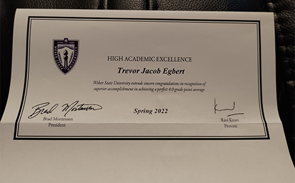
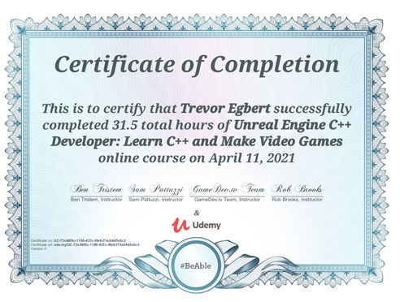

| Years | Name of School | Working Towards |
|---|---|---|
| 2010 | Layton High | High School Degree |
| 2011 | ||
| 2012 | ||
| 2013-2016 | NA | NA |
| 2017 | Davis Technical College | Digital Media Designer Certification* |
| 2018 | ||
| 2019 | ||
| 2020 | NA | NA |
| 2021 | Weber State University | Bachelor of Science |
| 2022 | ||
| *The certification is called "Digital Media Designer" but the focus was on animation and game design. | ||
I have really enjoyed the CS classes so far, I especially liked CS 1400. This class was my first interaction with working with Python. With prior experience working with C++ from my Udemy course I was able to grasp the concepts quickly. What made this class one of my favorites was we were learning Python while working on computer games. Since that what I want to do as career, and I find making games fun!
While attending Davis Technical college I was asked and joined the National Technical Honor Society. Then in spring Semester of 2022 was I recognized by Weber State University for High Academic Excellence.
I wanted to learn how to work in Unreal Engine so I could start making games but I also wanted to learn a general skill to. I found a course called "Unreal Engine C++ Developer: Learn C++ and Make Video Games" provide by Udemy that fulfilled both criteria. After a couple of months I had completed the course and received this certificate of completion for it.
